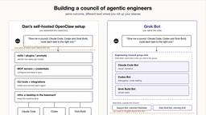
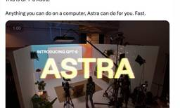
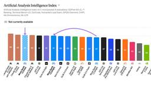

Latent.Space
https://www.latent.space
The AI Engineer newsletter + Top technical AI podcast. How leading labs build Agents, Models, Infra, & AI for Science. See https://latent.space/about for highlights from Greg Brockman, Andrej Karpathy, George Hotz, Simon Willison, Soumith Chintala et al! Click to read Latent.Space, a Substack publication with hundreds of thousands of subscribers.
フィード

OpenClaw Power, MacBook Simplicity: Five Days With Grok Bot
Latent.Space
SpaceXAI’s Grok Bot has the same level of programming power as OpenClaw, but it’s programmable at a different level of abstraction.
42分前

[AINews] GPT-6 Astra: OpenAI’s biggest LLM launch of all time
Latent.Space
new SOTA computer use and coding, 2.5x pricier per token, but WAY cheaper per task, less monitorable. overall, a very successful launch of OpenAI’s new frontier model class.
1日前
GPT-6 Astra: an automated AI Engineer you can hire for <$6 an hour
Latent.Space
We spent 20B+ tokens of GPT-6 Astra to explore everything. Here’s our learnings.
2日前

[AINews] Muse Spark 1.3 matches GPT-5.6-Sol, confirming Meta Superintelligence as the newest Frontier Lab, >90% discount for training
Latent.Space
an epic comeback story for Meta
2日前
[AINews] Claude Fable/Mythos 5.1: new SOTA model, 75% cache price cut but 70% more output tokens
Latent.Space
Queue the usual rush of model launches...
3日前
PRs NOT Welcome: How Top AI Open Source Projects Are Managing Thousands of Contributors 1
1
Latent.Space
Vercel’s AI SDK, Astro, Flue and tldraw are replacing drive-by community PRs with software factories, where teams of agents apply fixes and features.
4日前
[AINews] Fal’s H3 Max Live breaks the infinite videogen barrier
Latent.Space
You can now create decent video faster than you watch it. This is the start of... something. We’re not sure what.
4日前

[AINews] NVIDIA buys HuggingFace for $13B, as OpenAI publishes their HF incident retro
Latent.Space
Open Source wins!
10日前
[AINews] Hot Chips: OpenAI’s Jalapeño, Cerebras CS-5, Groq 3 LPX, Apple M6
Latent.Space
The conference with hot chips and even hotter companies
10日前
Lovable CTO: The Future of SaaS Is Apps That Agents Can Use
Latent.Space
Lovable is branching out from AI-powered web app creation and into MCP-powered ‘capabilities’. We talk to CTO Fabian Hedin.
10日前
🔬“We have foundation models for language, not for physics” — Anima Anandkumar, Bren Professor of Computing
Latent.Space
Anima Anandkumar has spent two decades in AI, from classical math to deep learning and back. Now she's using it to model the physical world, from weather to fusion reactors.
10日前
[AINews] Andrew Ng gets into AI Engineering
Latent.Space
An industry legend starts covering the inevitable!
12日前
[AINews] 10% worse, 100x cheaper, 10000x faster: Why Simulation is taking over
Latent.Space
Did you think RSI stopped at model training?
14日前
The Evolution of the Agent Harness
Latent.Space
Models keep absorbing the harness into their weights — soon, it will be a harness for human attention rather than for the model.
14日前
Simulation: the new Scaling Law — Joon Sung Park, Simile AI
Latent.Space
Simile’s CEO about his journey from the viral Generative Agents to creating 8 Billion Digital Twins of every living human... and why it’s gone from fun exploration to very serious business.
15日前
[AINews] Poolside gets $12B reverse-execuhire to NVIDIA; founders stay for $1B, employees go for $6B, Infraco scaling to 7GW neocloud
Latent.Space
Yes, we’re confused too.
15日前
The /wayfinder Skill: Navigating the “Fog of War” of Planning
Latent.Space
Matt Pocock tells us about his /wayfinder skill, for greenfield projects or for when the way forward is unclear.
16日前
[AINews] Death of Params: Z.ai CEO Jie Tang on GLM 5.3 and the new Post-training Scaling Law
Latent.Space
Every lab CEO is on X now
16日前